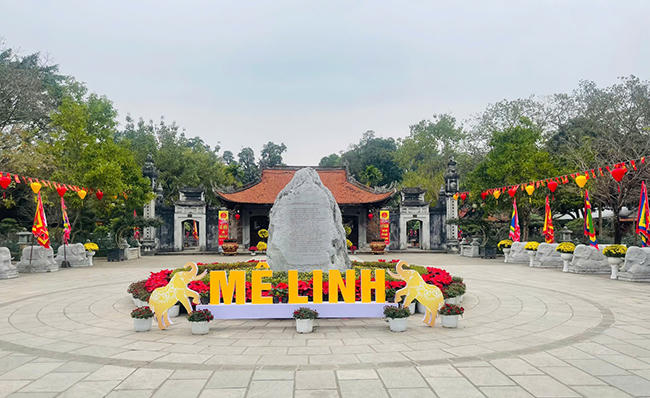
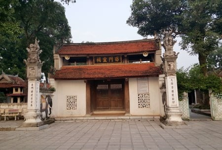
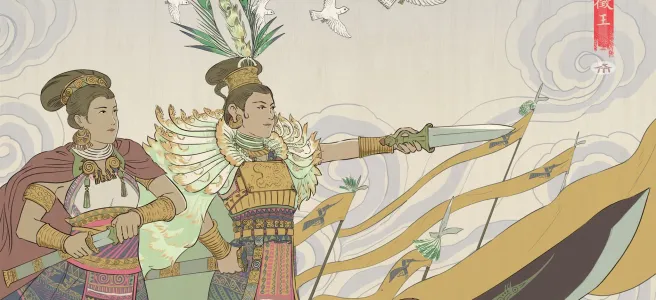
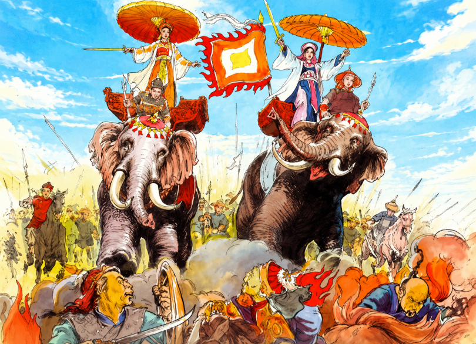
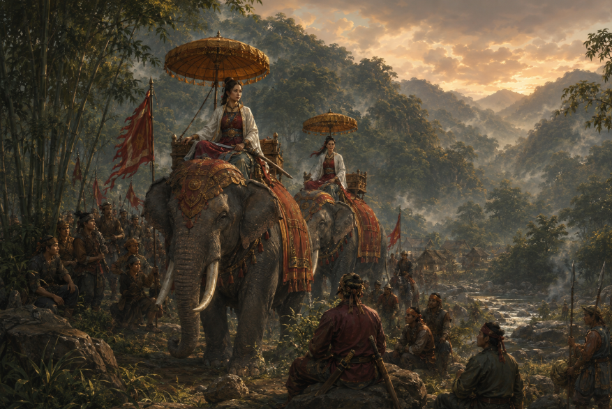
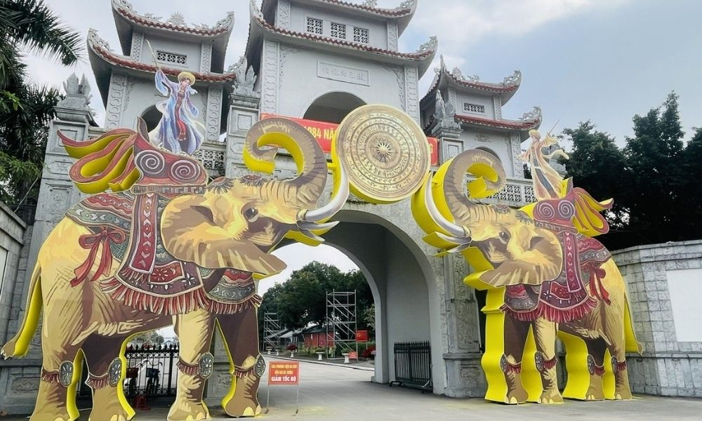

🔥
Sử Việt Tương Tác
HAI BÀ TRƯNG
Ngọn Lửa Mê Linh
Ngọn Lửa Mê Linh
Năm 40 — 43 · Cuộc Khởi Nghĩa Đầu Tiên
Ngươi là Trưng Trắc — thiếu nữ Mê Linh chứng kiến bất công dưới ách đô hộ, rồi trở thành nữ vương đầu tiên của người Việt. Từ lời thề Hát Môn, trận Lãng Bạc, đến giây phút cuối bên dòng sông Hát: một hành trình 7 chương về lòng dũng cảm, sự đoàn kết và cái giá của tự do.
⚔️ 7 chương
🎓 Kiến thức + Suy ngẫm
📖 Có nguồn tham khảo
▾ hoặc cuộn xuống
🌾 Chương 1 · Trước Năm 40 — Mê Linh, Trước Cơn Bão 📖 nguồn

1
~34
Mê Linh
2
3/40
Hát Môn
3
40
Luy Lâu
4
40–43
Trưng Vương
5
43
Lãng Bạc
6
43
Cấm Khê
7
Mãi mãi
Di sản
🔥Ý Chí
0%
📚 Trước khi là huyền thoại
Trước khi trở thành nữ vương, Trưng Trắc chỉ là con gái một Lạc tướng ở Mê Linh — vùng đất trồng lúa nước trù phú bên sông Hồng, nơi những gia tộc bản địa vẫn cố giữ nếp sống cũ dưới ách cai trị mới.
Đừng hình dung Trưng Trắc như một nữ tướng đã trưởng thành ngay từ đầu. Trước năm 40, nàng là thiếu nữ lớn lên trong một nếp nhà sàn ở Mê Linh — nơi cha nàng, một Lạc tướng có uy tín, vẫn ngày ngày phải cân đo giữa việc giữ phong tục tổ tiên và không chọc giận quan quân đô hộ.
Nàng học cưỡi ngựa, bắn cung như con trai — điều hiếm thấy ở một cô gái thời ấy. Nhưng điều định hình nàng nhiều nhất không phải cung tên, mà là những gì nàng chứng kiến mỗi mùa thu thuế: viên lại của Thái thú Tô Định đến từng nhà, cân đong không công bằng, và những ai chậm nộp đều bị đánh ngay giữa sân.
Một lần, Trưng Trắc hỏi cha
"Cha là Lạc tướng, sao lại phải cúi đầu nghe lệnh một viên quan từ phương Bắc?" Cha nàng chỉ im lặng rất lâu, rồi đáp: "Vì ta còn phải giữ mạng cho cả làng, con ạ. Nhẫn nhịn không phải hèn — chỉ là chưa đến lúc."
Câu trả lời ấy không làm nàng thỏa mãn. Nó chỉ gieo vào lòng nàng một câu hỏi sẽ theo nàng suốt nhiều năm: đến bao giờ mới là "lúc"? Sau này, khi lớn lên, nàng kết duyên cùng Thi Sách — con trai một Lạc tướng huyện Chu Diên. Đây không đơn thuần là một cuộc hôn nhân, mà là sự liên kết giữa hai dòng họ có thế lực, hai vùng đất — một bước đi kín đáo hướng tới việc tập hợp lực lượng bản địa.
🎓 Câu hỏi khởi đầu
Trưng Trắc là con gái của tầng lớp nào trong xã hội Giao Chỉ thời Bắc thuộc?
💭 Suy ngẫm (không chấm điểm)
"Nhẫn nhịn không phải hèn — chỉ là chưa đến lúc." Bạn nghĩ ranh giới giữa nhẫn nhịn khôn ngoan và nhẫn nhịn quá lâu nằm ở đâu?
Không có đáp án đúng/sai — đây là câu hỏi để bạn tự suy ngẫm trước khi bước vào hành trình.
⚡ Chứng kiến cảnh viên lại đánh một cụ già chậm nộp thuế ngay giữa sân đình, thiếu nữ Trưng Trắc...
📍 Lựa chọn B
Manh động lúc này chỉ khiến viên lại quay sang trút giận lên cả gia đình — Mê Linh chưa có lực lượng, chưa có đồng minh, chưa có thời cơ. Ngọn lửa cần được nuôi, không phải bùng lên rồi tắt ngấm.
⚡ Kìm nén, chờ đợi thời cơ chín muồi...
📍 Lựa chọn C
Nếu ai cũng quay mặt đi, áp bức sẽ không bao giờ chấm dứt. Đây không phải là cách một thủ lĩnh tương lai nhìn thế giới — nàng cần chứng kiến để hiểu, để nhớ, để sau này hành động.
⚡ Nhìn thẳng vào sự thật...
🩸 Chương 2 · Tháng 3/40 — Máu Nhuộm Và Lời Thề Hát Môn 📖 nguồn
Cửa Ải — Thử Thách Nối Cặp
Trước khi bước vào đêm định mệnh, hãy chứng tỏ hiểu biết của bạn. Nối đúng cả 4 cặp để mở khóa chương này!
🔗 Nối đúng 4/4 cặp
🗡 Nối: Nhân vật / Địa danh ↔ Vai trò
Nhấn một ô bên trái, sau đó nhấn ô bên phải để nối cặp.
Thi Sách
Tô Định
Chu Diên
Hát Môn
Quê hương của Thi Sách, huyện láng giềng Mê Linh
Chồng Trưng Trắc, bị Tô Định sát hại
Nơi Hai Bà Trưng tế cờ khởi nghĩa
Thái thú tàn bạo cai trị Giao Chỉ
0/4 đúng
1
~34
Mê Linh
2
3/40
Hát Môn
3
40
Luy Lâu
4
40–43
Trưng Vương
5
43
Lãng Bạc
6
43
Cấm Khê
7
Mãi mãi
Di sản

🔒 Điều ít được kể
Trước khi bị giết, Thi Sách không hành động đơn độc. Nhiều tháng trước đó, chàng đã bí mật cưỡi ngựa đêm khuya đến gặp các Lạc tướng ở Chu Diên, Câu Lậu — dò ý từng người, xây dựng một mạng lưới liên minh mà Tô Định hoàn toàn không hay biết.
Đó là một trò chơi nguy hiểm: mỗi lần rời nhà, Thi Sách không biết ai trong số những người mình gặp có thể là tai mắt của Tô Định. Nhưng chàng tin rằng chỉ có sự liên kết giữa các dòng họ Lạc tướng mới đủ sức làm nên chuyện lớn.
Thi Sách, đêm cuối cùng trước khi bị bắt
"Nếu ta không trở về, nàng đừng khóc thương lâu. Hãy biến nỗi đau ấy thành thứ vũ khí sắc hơn bất kỳ lưỡi gươm nào." Trưng Trắc khi ấy chỉ cười, gạt đi: "Chàng lo xa quá. Ta còn phải cùng chàng nhìn ngày đất nước sạch bóng quân Hán."
Nhưng mạng lưới bí mật ấy cuối cùng cũng lọt vào tai Tô Định — có thể qua một kẻ phản trắc, có thể chỉ vì một sơ suất nhỏ. Không cần xét xử, không cần bằng chứng rõ ràng, Tô Định ra lệnh bắt và xử tử Thi Sách ngay lập tức, để dập tắt mầm mống liên minh trước khi nó kịp lớn mạnh.
Tô Định — lệnh truyền khắp Mê Linh
"Kẻ nào dám tụ tập bàn chuyện phản loạn, số phận sẽ như Thi Sách. Đừng để ta phải nhắc lại lần hai!"
Trưng Trắc không gào khóc như Tô Định mong đợi. Nàng lặng lẽ cho người đi khắp Mê Linh, Chu Diên và các vùng lân cận — không phải để báo tang, mà để truyền một lời hẹn duy nhất: tập hợp tại Hát Môn.
📖 Sự thật lịch sử
Tháng 3 năm 40 (có tài liệu ghi mùa xuân), tại Hát Môn (nay thuộc Phúc Thọ, Hà Nội), Trưng Trắc cùng em gái Trưng Nhị làm lễ tế cờ, đọc lời thề trước ba quân và chính thức phất cờ khởi nghĩa.
Lời thề Hát Môn
"Một xin rửa sạch nước thù, hai xin dựng lại nghiệp xưa họ Hùng, ba kẻo oan ức lòng chồng, bốn xin vẹn vẹn sở công lênh này."
🎓 Kiểm tra kiến thức
Hai Bà Trưng làm lễ tế cờ, chính thức phất cờ khởi nghĩa tại đâu?
⚡ Trước khi phất cờ, một vị bô lão can ngăn: "Con là phận nữ nhi, sao dám cầm quân?" Trưng Trắc đáp lại...
⭐ Lựa chọn A · Ngọn Cờ Được Dựng!

Chính là khí phách làm nên huyền thoại! Trưng Trắc lên ngựa, Trưng Nhị theo sau. Tin tức lan nhanh khắp Giao Chỉ: đã có người dám phất cờ.
📖 Lan rộng thần tốcChỉ trong vài tuần, hào kiệt và các nữ tướng từ khắp Giao Chỉ, Cửu Chân kéo về hội quân — trong đó có những cái tên sau này trở thành huyền thoại riêng: Lê Chân, Bát Nàn, Thiều Hoa...
🏕️ Hát Môn, 3/40👭 Trưng Trắc & Trưng Nhị⚔️ Hào kiệt tụ nghĩa
⚡ Tiếp tục...
📍 Lựa chọn B
Nhường quyền chỉ huy ngay lúc khởi đầu sẽ khiến chính nghĩa quân hoang mang: ai là người họ thực sự đi theo? Chính hình ảnh một người phụ nữ dám đứng đầu mới là thứ khiến cả vùng Giao Chỉ chấn động và tin tưởng.
⚡ Giữ vững ngọn cờ...
🏯 Chương 3 · Năm 40 — Hạ Thành Luy Lâu 📖 nguồn
Cửa Ải Kép — Sắp Xếp + Điền Chỗ Trống
Hai thử thách liên tiếp để bước vào chiến dịch hạ thành Luy Lâu!
📜 Hoàn thành cả 2 thử thách
🗡 Thử thách 1/2 — Sắp xếp thứ tự thời gian
Kéo thả để sắp xếp 4 sự kiện theo đúng thứ tự lịch sử:
≡Nghĩa quân vây hãm thành Luy Lâu, sào huyệt của Tô Định
≡Thi Sách bị Tô Định bắt và xử tử
≡Tô Định cải trang bỏ trốn về phương Bắc
≡Hai Bà Trưng tế cờ khởi nghĩa tại Hát Môn
1
~34
Mê Linh
2
3/40
Hát Môn
3
40
Luy Lâu
4
40–43
Trưng Vương
5
43
Lãng Bạc
6
43
Cấm Khê
7
Mãi mãi
Di sản
🏯 Sào huyệt của kẻ thù
Luy Lâu (nay thuộc Thuận Thành, Bắc Ninh) không phải một thành ấp bình thường — đây là trị sở, trung tâm quyền lực của cả bộ máy đô hộ nhà Hán tại Giao Chỉ, nơi Tô Định đóng bản doanh.
Trong khi các cánh quân khác tỏa đi giải phóng từng thành ấp nhỏ, Trưng Trắc dồn phần lớn lực lượng tinh nhuệ nhất vào một mục tiêu duy nhất: đánh thẳng vào đầu não của kẻ thù. Đây không phải lựa chọn an toàn — Luy Lâu có tường lũy kiên cố và quân đồn trú đông đảo.
Một tướng dưới quyền lo lắng
"Thưa, đánh thẳng vào Luy Lâu là đánh vào nơi phòng thủ mạnh nhất. Sao không tiếp tục hạ dần các thành nhỏ để tích lũy lực lượng trước?"
Trưng Trắc lắc đầu: chặt đứt cái đầu, thân rắn sẽ tự rã. Nếu cứ đánh vòng ngoài, Tô Định có thời gian cầu viện từ phương Bắc. Nghĩa quân bao vây Luy Lâu, cắt đường tiếp tế, rồi đồng loạt công thành trong đêm — đánh vào đúng lúc quân đồn trú lơ là nhất.
📖 Tô Định bỏ chạy
Trước sức tấn công dữ dội và bất ngờ, Tô Định — theo nhiều ghi chép dân gian — phải cắt tóc, cạo râu, cải trang thành dân thường để trà trộn thoát thân, chạy trốn về Nam Hải (Trung Quốc). Kẻ từng ra oai khắp Giao Chỉ nay phải giấu mặt bỏ chạy trong đêm.
🏯 Luy Lâu thất thủ🏃 Tô Định cải trang trốn chạy📅 Trong vòng vài tháng
🎓 Kiểm tra kiến thức
Sau khi Luy Lâu thất thủ và Tô Định bỏ chạy, nghĩa quân Hai Bà Trưng đã giải phóng tổng cộng bao nhiêu thành ấp?
⚡ Sau khi hạ Luy Lâu, một số quân lính Hán trong thành xin đầu hàng thay vì bỏ chạy. Trưng Trắc quyết định...
⭐ Lựa chọn A · Nữ Vương Của Lòng Người!
Một quyết định định hình cả cách nàng sẽ trị quốc sau này. Tin tha mạng cho hàng binh lan truyền nhanh — nhiều đồn trú khác không còn quyết tử chống cự, mà mở cổng thành ngay khi nghĩa quân tới gần.
💡 Hiệu ứng dây chuyềnChỉ trong chưa đầy ba tháng, toàn bộ Giao Chỉ, Cửu Chân, Nhật Nam quy về dưới ngọn cờ Hai Bà Trưng — 65 thành ấp được giải phóng, một con số chưa từng có trong lịch sử các cuộc khởi nghĩa trước đó.
⚡ Tiếp tục...
📍 Lựa chọn B
Trừng phạt không phân biệt sẽ khiến các thành khác quyết tử chống cự đến cùng thay vì đầu hàng — kéo dài chiến sự, tổn thất nhiều hơn cho cả hai bên. Một nữ vương tương lai cần biết phân biệt kẻ chủ mưu và người bị cuốn vào guồng máy.
⚡ Suy xét lại...
👑 Chương 4 · 40–43 CN — Một Chính Sách Khó Khăn 📖 nguồn
1
~34
Mê Linh
2
3/40
Hát Môn
3
40
Luy Lâu
4
40–43
Trưng Vương
5
43
Lãng Bạc
6
43
Cấm Khê
7
Mãi mãi
Di sản

👑 Cai trị khó hơn chinh chiến
Giành được thiên hạ đã khó, giữ và cai quản nó còn khó hơn. Trưng Vương phải đối mặt với một vương quốc vừa thành lập, còn ngổn ngang những mâu thuẫn nội bộ chưa kịp giải quyết.
Trưng Trắc lên ngôi, xưng Trưng Vương, đóng đô tại Mê Linh — quê hương của chính mình. Nhưng ngai vàng vừa an vị, một vấn đề gai góc đã xuất hiện: một số Lạc tướng từng cộng tác với chính quyền Tô Định trong nhiều năm — không phải vì trung thành, mà để bảo toàn dòng họ — nay đến xin quy phục.
Một vị tướng trẻ, phẫn nộ
"Tâu Trưng Vương, những kẻ này từng thu thuế giúp giặc, từng im lặng khi dân ta bị đánh đập! Sao có thể để chúng yên vị trong triều đình mới?"
Nhưng một mưu sĩ lớn tuổi hơn lại can gián: nếu trừng phạt tất cả những ai từng cộng tác — dù bị ép buộc hay tự nguyện — triều đình non trẻ sẽ mất đi số đông kinh nghiệm quản lý, đồng thời đẩy họ vào thế phải chống đối để tự vệ. Vương quốc vừa mới ra đời sẽ vỡ vụn từ bên trong trước khi quân Hán kịp quay lại.
📖 Bên cạnh chính sách lớn
Trưng Vương giảm thuế khóa cho dân trong hai năm liền, xóa bỏ nhiều luật lệ hà khắc của nhà Hán, khôi phục phong tục Lạc Việt. Dưới cờ của bà quy tụ hơn 30 nữ tướng — trong đó Lê Chân từ vùng duyên hải đã tự tay lập nên vùng đất An Biên, tiền thân của Hải Phòng ngày nay, chứ không chỉ đơn thuần cầm quân theo lệnh.
🗡 Thử thách nhanh — Điền vào chỗ trống
Hoàn thành câu sau:
"Trưng Trắc lên ngôi, xưng là _______, đóng đô tại quê hương Mê Linh."
"Trưng Trắc lên ngôi, xưng là _______, đóng đô tại quê hương Mê Linh."
💭 Suy ngẫm (không chấm điểm)
Một chính quyền mới có nên trừng phạt tất cả những ai từng "hợp tác" với chế độ cũ, hay cần phân biệt giữa kẻ chủ mưu và người bị cuốn vào hoàn cảnh?
Không có đáp án đúng/sai — đây là câu hỏi mà mọi chính quyền mới trong lịch sử đều phải đối mặt.
⚡ Trưng Vương quyết định chính sách với các Lạc tướng từng cộng tác...
⭐ Lựa chọn A · Đoàn Kết Hơn Trả Thù!
Một quyết định khôn ngoan. Phần lớn Lạc tướng từng dao động nay dốc lòng phục vụ triều đình mới — bộ máy hành chính vận hành trơn tru hơn nhiều so với việc phải xây dựng lại từ đầu.
💡 Ba năm hiếm hoiNhờ vậy, ba năm 40–43 trở thành giai đoạn hiếm hoi trong lịch sử cổ đại mà một vương quốc do phụ nữ đứng đầu, với đội ngũ nữ tướng đông đảo chưa từng có, vận hành tương đối ổn định — dù thời gian ngắn ngủi.
⚡ Tiếp tục...
📍 Lựa chọn B
Trừng phạt không phân biệt khiến nhiều Lạc tướng từng dao động nay quay sang oán hận, một số thậm chí án binh bất động khi chiến sự nổ ra sau này. Đoàn kết nội bộ mới là nền móng để chống lại kẻ thù chung.
⚡ Nhận ra sai lầm...
⚔️ Chương 5 · Năm 43 — Trận Lãng Bạc 📖 nguồn
Thử Thách Tứ Quan — 4 Câu Liên Tiếp
Để đối đầu Mã Viện — lão tướng bách chiến của nhà Hán — hãy trả lời đúng ít nhất 3/4 câu hỏi. Mỗi câu sai trừ 3 điểm.
🗡️ Đúng ≥3/4 câu
🗡 Câu 1/4
Mã Viện được vua Hán Quang Vũ phong danh hiệu gì trước khi sang đàn áp khởi nghĩa?
1
~34
Mê Linh
2
3/40
Hát Môn
3
40
Luy Lâu
4
40–43
Trưng Vương
5
43
Lãng Bạc
6
43
Cấm Khê
7
Mãi mãi
Di sản

⚔️ Hai chị em, hai cánh quân
Trong trận đánh quyết định này, Trưng Trắc và Trưng Nhị không cùng đứng một chỗ. Sử sách và truyền thuyết dân gian đều nhắc đến việc hai chị em chia quân trấn giữ hai cánh khác nhau — phối hợp nhịp nhàng dù mỗi người đối mặt một mũi tiến công riêng của Mã Viện.
Mã Viện là lão tướng dày dạn trận mạc bậc nhất của nhà Hán — người từng dẹp yên nhiều cuộc nổi dậy khắp đế chế. Ông không nóng vội. Mỗi bước tiến quân đều đi kèm đắp đường, dựng lũy, đảm bảo đường tiếp tế an toàn — một kiểu chiến tranh tiêu hao mà nghĩa quân Hai Bà Trưng, vốn mạnh về tinh thần hơn trang bị, khó lòng đối phó lâu dài.
Trưng Nhị, trước giờ xung trận
"Chị ơi, quân Mã Viện đông và được trang bị hơn hẳn. Nhưng chúng ta có thứ chúng không có: mỗi người lính dưới cờ này đang chiến đấu cho chính quê hương mình."
Trận Lãng Bạc diễn ra ác liệt trong nhiều ngày. Quân Hai Bà Trưng chiến đấu dũng cảm nhưng dần đuối sức trước một đội quân chính quy, được huấn luyện bài bản và hậu cần vững chắc hơn nhiều. Đây là lần đầu tiên kể từ ngày dựng cờ, Trưng Vương phải đối mặt với khả năng thất bại.
🎓 Câu hỏi — Ý nghĩa lịch sử
Dù cuối cùng thất bại trước Mã Viện, vì sao cuộc khởi nghĩa Hai Bà Trưng vẫn được xem là một bước ngoặt lớn của lịch sử dân tộc?
⚡ Trước sức ép ngày càng lớn của quân Mã Viện tại Lãng Bạc, Trưng Vương ra lệnh...
📍 Lựa chọn B
Cố thủ đến cùng tại một vị trí đã bị áp đảo về quân số và tiếp tế gần như chắc chắn dẫn đến việc toàn bộ lực lượng bị bao vây, tiêu diệt ngay tại trận. Đôi khi rút lui có tổ chức mới là cách giữ được ngọn lửa để chiến đấu tiếp.
⚡ Bảo toàn lực lượng để còn chiến đấu...
🌊 Chương 6 · Năm 43 — Cấm Khê, Dòng Sông Hát 📖 nguồn
1
~34
Mê Linh
2
3/40
Hát Môn
3
40
Luy Lâu
4
40–43
Trưng Vương
5
43
Lãng Bạc
6
43
Cấm Khê
7
Mãi mãi
Di sản

🌊 Chặng cuối
Rút khỏi Lãng Bạc, tàn quân của Trưng Vương lui về vùng Cấm Khê (nay thuộc Ba Vì, Hà Nội) — một vùng đồi núi hiểm trở, hy vọng có thể cố thủ và củng cố lại lực lượng.
Nhưng Mã Viện không cho đối phương thời gian dưỡng sức. Quân Hán truy kích liên tục, siết chặt vòng vây quanh Cấm Khê. Lương thực cạn dần, quân số hao hụt sau mỗi trận giao tranh nhỏ. Đây không còn là cuộc chiến vì chiến thắng — mà là cuộc chiến để giữ lấy phẩm giá cuối cùng.
Trưng Nhị, trong đêm cuối tại Cấm Khê
"Chị, chúng ta không còn đủ người, không còn đủ lương. Nếu tiếp tục, tất cả sẽ chết trong tay giặc như tù binh nhục nhã."
Trưng Trắc nhìn ra dòng sông Hát chảy phía xa — nơi ba năm trước, gần đó, nàng và em gái từng tế cờ, đọc lời thề trước ba quân. Vòng tròn định mệnh dường như đang khép lại đúng nơi nó bắt đầu.
🎓 Câu hỏi kiến thức
Cấm Khê — nơi diễn ra những trận đánh cuối cùng của Hai Bà Trưng — nay thuộc khu vực nào?
💭 Suy ngẫm (không chấm điểm)
Khi biết chắc mình sẽ thua, điều gì đáng để chiến đấu tiếp: cơ hội sống sót, hay cách mà người ta lựa chọn đối diện với thất bại?
Không có đáp án đúng/sai — đây là câu hỏi đã theo chân biết bao anh hùng trong lịch sử.
⚡ Trước vòng vây khép chặt, không còn đường thoát, Trưng Vương...
⭐ Lựa chọn A · Tự Do Đến Hơi Thở Cuối!

Ngày mồng 6 tháng 2 âm lịch, năm 43. Hai chị em cùng ra bờ sông Hát, không chịu để quân Hán bắt sống. Đó không phải một thất bại — đó là lựa chọn cuối cùng của hai con người tự do.
Tin tức lan đi khắp Giao Chỉ trong nỗi tiếc thương. Nhưng cùng với nỗi đau, một điều gì đó khác cũng bắt đầu: câu chuyện về hai chị em dám đứng lên đầu tiên sẽ không bao giờ bị lãng quên.
📖 Di sản tức thìNgay sau đó, dân chúng khắp nơi tự phát lập đền thờ. Chỉ trong vài thế hệ, Hai Bà Trưng trở thành biểu tượng quốc gia — được thờ phụng ở hàng trăm ngôi đền trên khắp miền Bắc Việt Nam.
🏛️ Hàng trăm ngôi đền📅 Giỗ mồng 6/2 âm lịch🎗️ Tưởng niệm hằng năm
⚡ Tiếp tục...
📍 Lựa chọn B
Đầu hàng đồng nghĩa với việc bị giải về làm chiến lợi phẩm, bêu riếu trước triều đình nhà Hán. Đây không phải là cách lịch sử ghi lại kết cục của Hai Bà Trưng — mà là chọn cái chết tự do bên bờ sông.
⚡ Nhận ra con đường thật sự...
🌺 Chương 7 · Hai Nghìn Năm Sau — Di Sản Bất Tử 📖 nguồn
Thử Thách Cuối — Vòng Phán Xét Lịch Sử
5 câu hỏi tổng hợp cuối cùng. Đúng ≥4/5 để bước vào chương kết với điểm thưởng lớn nhất!
🌺 Cần ≥4/5 câu đúng
🌺 Câu 1/5 — So sánh lịch sử thế giới
Cùng thời kỳ Hai Bà Trưng khởi nghĩa (năm 40), một nữ thủ lĩnh khác cũng nổi dậy chống La Mã ở châu Âu. Đó là ai?
1
~34
Mê Linh
2
3/40
Hát Môn
3
40
Luy Lâu
4
40–43
Trưng Vương
5
43
Lãng Bạc
6
43
Cấm Khê
7
Mãi mãi
Di sản

🏛️ Hai nghìn năm sau
Đế quốc Hán đã sụp đổ từ lâu. Mã Viện chỉ còn là một cái tên trong sử sách. Nhưng ngọn lửa Mê Linh vẫn cháy — không phải trong một triều đại, mà trong ký ức của cả một dân tộc.
Điều đáng kinh ngạc không chỉ là việc Hai Bà Trưng được tôn thờ — mà là cách câu chuyện của họ tiếp tục truyền cảm hứng cho những thế hệ phụ nữ Việt Nam sau này. 200 năm sau, Bà Triệu đứng lên với câu nói bất hủ vọng lại tinh thần ấy. Tên "Hai Bà Trưng" được đặt cho một quận giữa lòng thủ đô Hà Nội — điều hiếm có dành cho bất kỳ nhân vật lịch sử nào.
"Giặc đến nhà đàn bà cũng đánh" — tám chữ vàng không phải là một câu khẩu hiệu, mà là bài học sống bằng máu của hai người phụ nữ đã dám đứng lên đầu tiên, khi cả một dân tộc còn chưa biết mình có thể phản kháng.
🎓 Câu hỏi cuối — Tư duy sâu
Vì sao Hai Bà Trưng vẫn được tôn thờ sau 2.000 năm, dù chỉ trị vì 3 năm và cuối cùng thất bại?
⚡ Di sản lớn nhất mà Hai Bà Trưng để lại cho hậu thế là gì?
📍 Lựa chọn B
Chiến công quân sự rất vĩ đại — nhưng di sản của Hai Bà còn lớn hơn thế. Sau 2.000 năm, người ta tôn thờ họ không chỉ vì thắng trận, mà vì cách họ đã sống và đối diện với cả thắng lợi lẫn thất bại như những con người tự do trọn vẹn.
⚡ Nhìn toàn diện hơn...
⚔️
Hành Trình Hoàn Thành!
0 điểm
—
...
📚 Ba Bài Học Từ Hai Bà Trưng
1. Đừng quên, và đừng vội vàng: Trưng Trắc mang trong lòng ngọn lửa từ thời thiếu nữ, nhưng chỉ hành động khi thời cơ và mạng lưới liên minh đã chín muồi. Ghi nhớ bất công không phải là yếu đuối — hành động đúng lúc mới là sức mạnh.
2. Quyền lực đi cùng trách nhiệm khó khăn hơn chiến trường: Giành ngôi vương chỉ là bước đầu. Cách Trưng Vương chọn tha thứ cho hàng binh, trọng dụng người từng cộng tác với kẻ thù, mới là điều giữ cho vương quốc non trẻ đứng vững — dù chỉ trong ba năm ngắn ngủi.
3. Thất bại không xóa được ý nghĩa của một cuộc đời: Hai Bà Trưng thua trận cuối cùng, nhưng lựa chọn đối diện với thất bại ấy — không khuất phục, không cầu xin — đã biến họ thành bất tử hơn bất kỳ chiến thắng nào.
2. Quyền lực đi cùng trách nhiệm khó khăn hơn chiến trường: Giành ngôi vương chỉ là bước đầu. Cách Trưng Vương chọn tha thứ cho hàng binh, trọng dụng người từng cộng tác với kẻ thù, mới là điều giữ cho vương quốc non trẻ đứng vững — dù chỉ trong ba năm ngắn ngủi.
3. Thất bại không xóa được ý nghĩa của một cuộc đời: Hai Bà Trưng thua trận cuối cùng, nhưng lựa chọn đối diện với thất bại ấy — không khuất phục, không cầu xin — đã biến họ thành bất tử hơn bất kỳ chiến thắng nào.